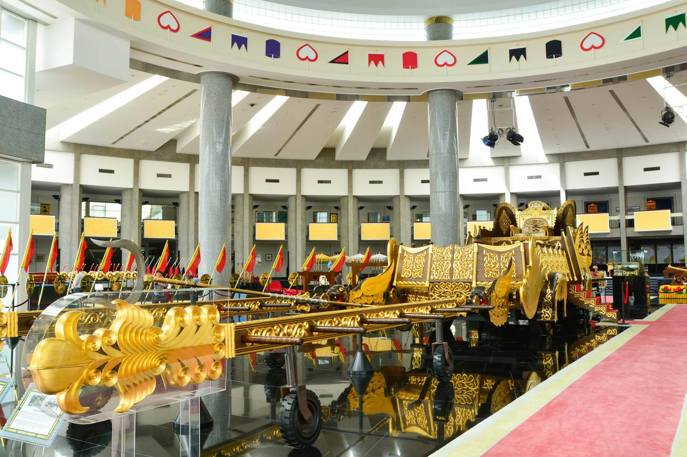

Royal Heritage
Discover Brunei's royal history at the Royal Regalia Museum, which showcases ceremonial artefacts, royal regalia and exhibitions celebrating the Sultanate's heritage.
Explore the rich traditions, history and cultural heritage of Brunei Darussalam.

Discover Brunei's royal history at the Royal Regalia Museum, which showcases ceremonial artefacts, royal regalia and exhibitions celebrating the Sultanate's heritage.

Explore Brunei's traditional craftsmanship, including handwoven textiles, songkok-making and decorative metalwork. These crafts reflect skills and traditions passed down through generations.

Experience Brunei's local cuisine, including ambuyat, a traditional dish made from sago starch. Discover the unique flavours and food traditions that form an important part of Bruneian culture.